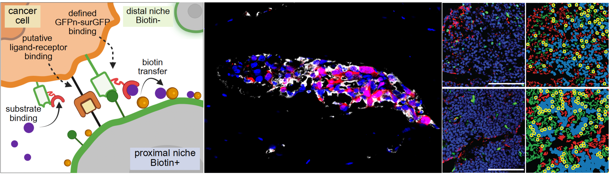
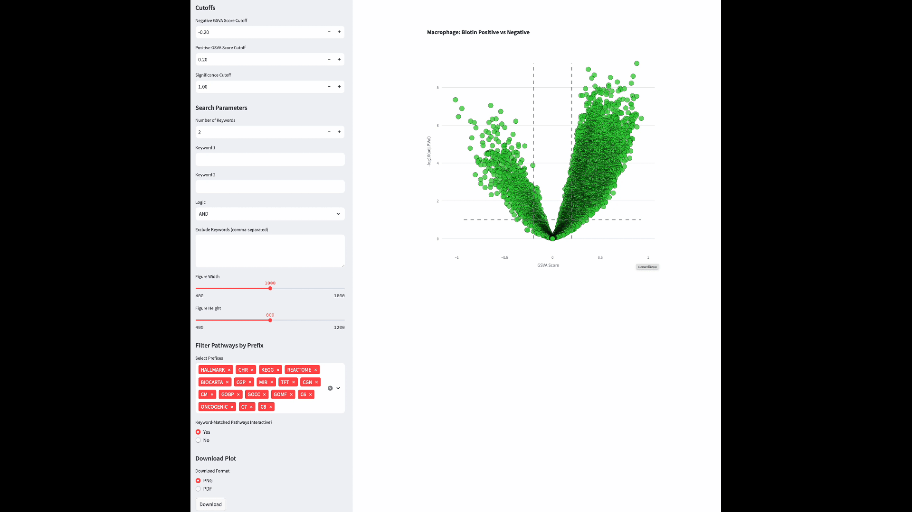

This manuscript repository
Use this resource to reproduce the paper-level single-cell integration, DESeq2, GSEA, GSVA, trajectory, and CellChat workflows, and to download the manuscript companion datasets.
This site is the manuscript companion resource for the study, collecting the single-cell, pathway, trajectory, and communication workflows together with processed data resources. The image-based spatial-analysis workflow used in the same study is now connected through the dedicated companion repository TME Spatial.

Use this resource to reproduce the paper-level single-cell integration, DESeq2, GSEA, GSVA, trajectory, and CellChat workflows, and to download the manuscript companion datasets.
Use TME Spatial to run or adapt the image-based spatial-analysis workflow developed for this study, including overlay generation, nuclei segmentation, cell typing, region analysis, cell distribution, and distance analysis.
Start with TME Spatial if your goal is to reproduce or extend the immunofluorescence image spatial-analysis components of the paper. The app was organized specifically so the spatial-analysis workflow from this study can be reused outside the original manuscript codebase.
Best match: niche labeling, ROI analysis, cell distribution analysis, and nearest-neighbor or boundary-distance measurements from image-derived channel grids.
These interactive volcano plots allow exploration of differentially regulated pathways between biotin-positive and biotin-negative immune populations.

| File | Description |
|---|---|
01_preprocessing_demultiplexing_template.Rmd |
Process Cell Ranger outputs and generate individual Seurat objects, including demultiplexing. |
02_integration.Rmd |
Integrate the single-cell objects. |
03_scanpy_plot.ipynb |
Generate manuscript plots in Scanpy. |
04_processing_for_DESeq2.Rmd |
Prepare DESeq2 objects for differential-expression and pathway analysis. |
05_DESeq2_DEG.Rmd |
Differential gene-expression analysis. |
06.1_pre_requested_Matrix.utils.R |
Utility script for required packages and helper functions. |
06.2_GSEA.Rmd |
Gene set enrichment analysis. |
07.GSVA.Rmd |
GSVA pathway activity analysis. |
08.velocyto.ipynb |
RNA velocity / trajectory analysis. |
09.expression_distence.ipynb |
Transcriptomic distance analysis. |
10.CellChat_comparsion.Rmd |
Cell-cell communication analysis. |
| Directory or file | Description | Related figure(s) | Connection |
|---|---|---|---|
immunofluourscance-image-spatial-analysis_ERE_or_ERa-positive-macrophages_distribution.zip |
Spatial analysis measuring ERa+ / ERE+ macrophage distance to nearest tumor cells. | Fig S4G-L | Can be re-run or adapted in TME Spatial. |
immunofluourscance-image-spatial-analysis_diffusion-lesions_niche-labeling-model-comparisions.zip |
Spatial analysis comparing niche-labeling methods in bone metastasis diffusion lesions. | Fig 2E, Fig S2B, Fig S2C | Closely tied to the image-based niche-labeling workflow in TME Spatial. |
immunofluourscance_image_spatial_analysis_demonstration_scripts_and_data.zip |
Demonstration scripts and data for customized spatial analysis. | / | Best bridge between this repository and TME Spatial. |
immunofluourscance-image-spatial-analysis_isolate-lesions_niche-labeling-model-comparisions.zip |
Spatial analysis comparing niche-labeling methods in isolated lesions. | Fig 2D, Fig S2A | Related to the TME Spatial niche-labeling workflow. |
immunofluourscance-image-spatial-analysis_T_cell_distribution_in_ctrl-Esr1KO.zip |
Spatial analysis measuring T cell distribution in the tumor microenvironment. | Fig 7 | Related to cell distribution analysis in TME Spatial. |
SAMENT_single_cell_per-sample-Seurat_objects.zip |
Individual SAMENT Seurat and Scanpy objects from demultiplexed scRNA-seq, without cell-type annotation. | / | This manuscript repository. |
SAMENT_single_cell_integrated_objects.zip |
Integrated SAMENT Seurat and Scanpy objects, batch-corrected and cell-type annotated. | All SAMENT scRNA-seq related panels | This manuscript repository. |
cellranger_demultiplexed_scRNA-seq_matrix.zip |
Cell Ranger scRNA-seq outputs. | / | This manuscript repository. |
Macrophage_LysM_Esr1_KO_single_cell_integrated_objects.zip |
Integrated LysM-Esr1 Seurat and Scanpy objects, batch-corrected and cell-type annotated. | All LysM-Esr1 scRNA-seq related panels | This manuscript repository. |
Macrophage_LysM_Esr1_KO_single_cell_per-sample-Seurat_objects.zip |
Individual LysM-Esr1 Seurat and Scanpy objects from demultiplexed scRNA-seq, without cell-type annotation. | / | This manuscript repository. |
scRNA-seq_analysis_scripts.zip |
All scRNA-seq analysis scripts. | / | This manuscript repository. |
Xu Z*, Liu F*, Ding Y, Pan T, Wu Y-H, Han Y, Liu J, Bado IL, Zhang W, Wu L, Gao Y, Hao X, Yu L, Li Y, Edwards DG, Chan HL, Aguirre S, Dieffenbach MW, Chen E, Wang S, Shen Y, Hoffman D, Becerra Dominguez L, Rivas CH, Chen X, Wang H, Kang Y, Gugala Z, Satcher RL, Zhang XH-F. Unbiased niche labeling maps immune-excluded niche in bone metastasis. Cell. 2026. Published online April 2026. doi:10.1016/j.cell.2026.04.009